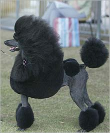

The end of a dog's taleDate: April 13 2004 Breeders reckon the new ban on docking puppies' tails really takes the biscuit, writes Joel Gibson. When a bulldog named Buldawg Our Man Godfrey - "Bob" to his close friends - was crowned Best in Show yesterday at the Royal Easter Show, the applause was a little dampened, the ribbon a little less brilliant and the victory lap a little shorter than usual. For the tight-knit community of people who breed, show and handle purebred dogs, Best in Show is often the biggest day of the year. But April 1 marked the end of a long, sometimes bitter and ultimately futile battle with the State Government, animal welfare groups and liberationists over the emotive issue of puppies' tails. On that day, NSW fell into line with other states and banned the removal - or docking - of dogs' tails except for therapeutic reasons and unless performed by a vet. Many breeders are threatening to stop breeding in protest at the ban, which could signal the end of bloodlines whose pups once fetched as much as a small car. A rottweiler breeder, Patricia Hall, has dogs, bitches and frozen semen worth thousands of dollars that she says she will never use for breeding again. As president of the 35,000-member DogBody, Hall has argued that the ban on tail docking is a restraint of trade and an impingement on the rights of responsible people to care for their own animals, and is likely to lead to poor hygiene or injury. But Hall and her ilk are victims of a "paradigm shift" in ideas about animal welfare, says Dr Mark Lawrie, the RSPCA's chief veterinarian in NSW. "[The ban] comes up against long-held beliefs that people are emotively involved with. More and more developed societies are doing away with this practice and in five or 10 years the breeders will be supportive of it," he said. What the dog people are asking themselves is, why them. There seem to be more pressing issues for liberationists. A Freedom of Information request by one breeder revealed that the NSW Government's consultation process elicited 36 responses about tail docking. Seven were in favour of a ban (four organisations and three individuals), whereas 28 argued against it (11 organisations and seven individuals). Perhaps the purpose is symbolic, says Dr Caroline West, a lecturer in applied ethics at the University of Sydney. Animal liberationists have had many more significant victories in the 30-year history of their movement, such as the Prevention of Cruelty to Animals Act and regulations governing the use of animals in experiments, but their efforts have rarely had such a visible impact on the everyday lives of ordinary people. "I have to say that the focus on docking seems slightly strange to me, given that other issues - for example, factory farming and other meat production processes - seem to involve so much more suffering to non-human animals than docking. But tail docking was probably an easier battle to win, politically speaking, since many people already think it's pointless and pretty barbaric." Applied ethicists in the tradition of the British philosopher Peter Singer, says West, would probably consider docking a marginal case. Removing dogs' tails is unnatural, certainly, but justifiable if any suffering is outweighed by other benefits. There are interesting similarities with human circumcision, she says. "In both cases, the subjects [dogs or typically very young infants] are not in a position to offer their own consent to the procedure. Both cases may involve some suffering to those involved, although there's argument about the extent of this in both cases. In both cases, similar justifications are given for the practices: health benefits for the individual, aesthetic reasons, continuity of historical and cultural tradition, etc. I think the parallel is interesting: if you think one's morally OK, why should the other be different?" In the end, dog breeders might have the cuteness of their pets to blame for being targeted. "People are so much more motivated to stop mistreatment of animals that are cute," she says. "If puppies looked like giant insects, I think people would be much less moved . . . I don't think this prejudice in favour of the cute is really morally defensible [but] if it helps to prevent unjustified suffering to some non-human animals, that's at least something." This material is subject to copyright and any unauthorised use, copying or mirroring is prohibited. |
http://www.cirp.org/news/smh04-13-04/